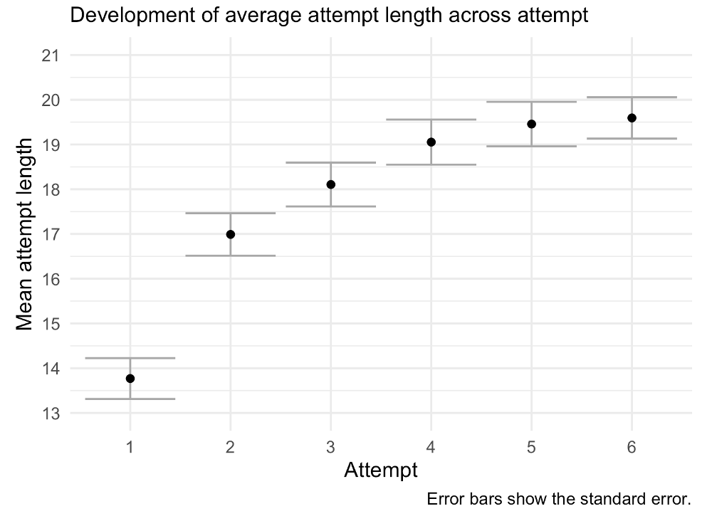
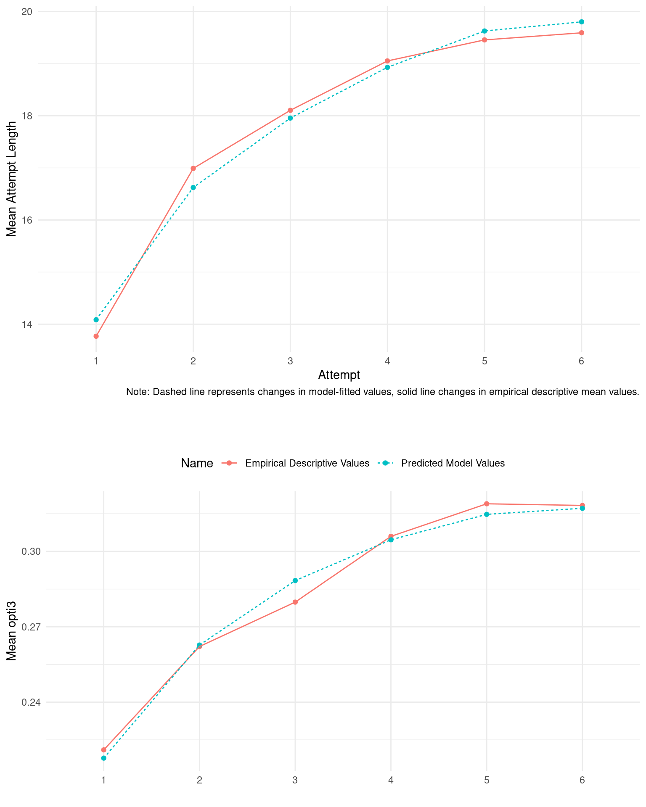
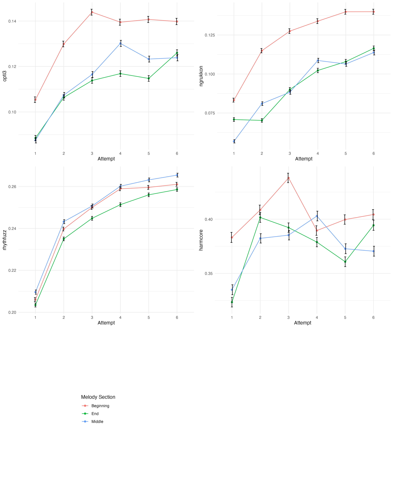
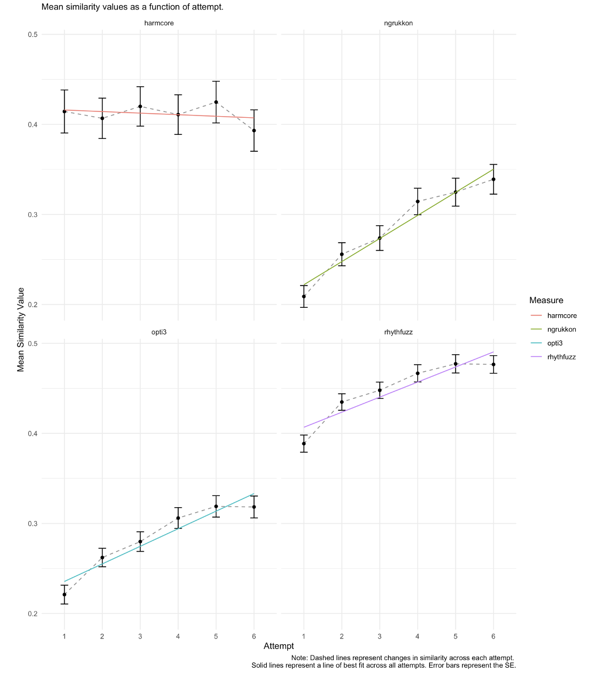
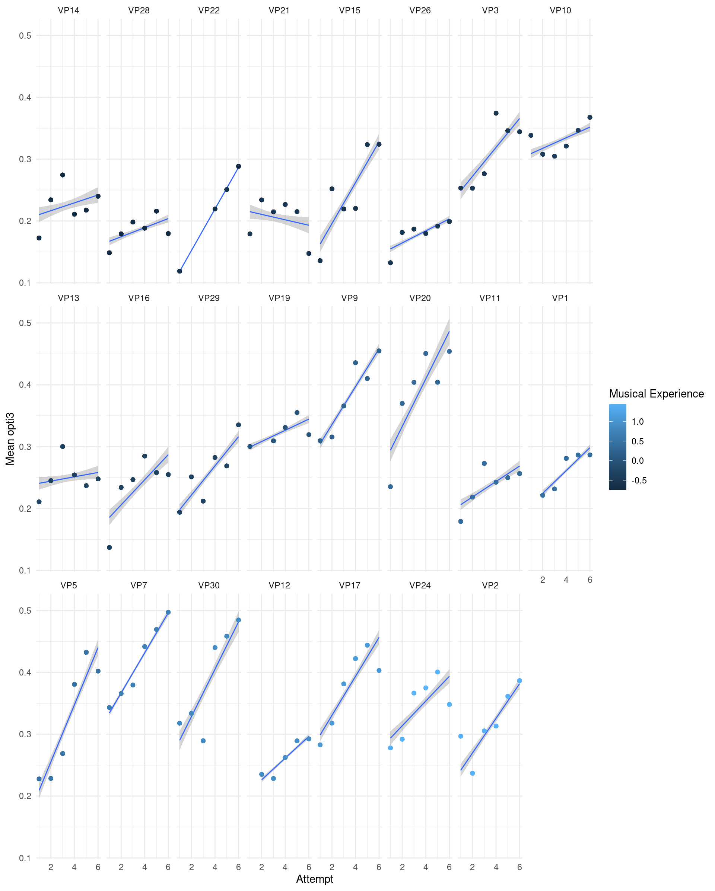
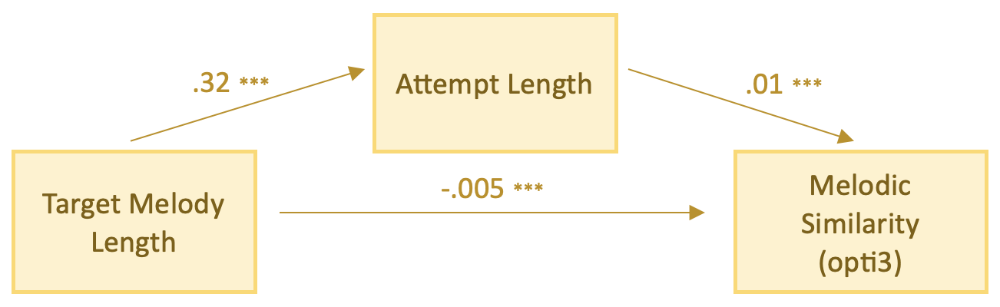

Learning and recalling melodies
white_paper_2_silas_and_mullensiefen_2023.RmdBirds-eye view
In this paper, we examined how people learn and recall melodies over multiple attempts. In a first simulation experiment, we reasoned for using similarity measures rather than accuracy-based measures to score how well melodies are recalled. In the second experiment, 31 participants sang back 28 melodies, and the analysis aimed to predict how similar their sung recalls were to the original melodies over multiple attempts.
It was found that, as people try to recall long melodies, their attempts tend to get longer over multiple attempts, and their overall performance improves too. We concluded that when a melody is long enough to require multiple attempts to sing back in full, the main factor determining performance is the length of the target melody. Melodic structure (e.g., tonality, intervals, rhythms) may be more critical for shorter melodies or when dealing with more diverse types of melodies than those used in their study.
Experiment 1: Similarity Measures as a Methodological Advance for Scoring Melodic Recall Data
Different algorithmic measures were used to assess how well people recall and sing melodies. Specifically, we profiled measures related to the notion of “accuracy” against measures of melodic similarity. We found that accuracy measures have notable limitations. Measures of melodic similarity measures were preferred because they rewarded participants for singing more notes and approaching the true length of the melody, which was not always the case for accuracy measures.
Simulation experiment results for different methods of scoring melodic recall data.
opti3,” a measure that considers various musical dimensions beyond pitch and intervals, was found to be more comprehensive and ecologically valid. It accounted for a wider range of musical errors and could measure different aspects of musical accuracy simultaneously. The use of opti3 was chosen as the main way to measure how well people remember and sing melodies in Experiment 2.
Experiment 2: How Do We Learn Melodies? A Melodic Similarity-based Perspective.
We summarise the key results of Experiment 2:
- Recall of Melodies Improves Over Time: When people try to remember a melody, they tend to start with an incomplete recall on their first attempt. With each subsequent try, they usually add more notes to their recall. This process of recall improves over time, but it often doesn’t reach a perfect match with the original melody, even after six attempts.

- Learning Curve Resembles an Exponential Curve: The improvement in recalling melodies follows a curve that resembles an exponential shape. It keeps increasing with each attempt but eventually levels off, usually not reaching the full length of the target melody.

- Different Aspects of Melodies Are Learned Differently: When people recall melodies, they tend to focus on improving the earlier parts of the melody, performing less well on the later notes they’ve added more recently. However, when it comes to rhythm, the middle of the melody is remembered better than the earlier or later parts.

- Harmonic Elements May Not Improve Across Attempts: While other aspects like rhythm and intervallic structure improve across recall attempts, harmonic elements may remain stable. This suggests that people might focus on pitch and interval information first, and when they can’t recall more intervals, they switch to remembering rhythmic details.

Melodies Might Be Learned Simultaneously Across Different Aspects: Instead of remembering different musical features separately, we argued that perhaps people tend to build representations of melodies across various aspects simultaneously. This approach may be more efficient and reflects the interconnection of different melodic features.
Individual Differences in Melodic Recall: Some people remember certain melodies better than others, possibly due to prior familiarity with similar melodies or differences in their musical and nonmusical memory skills.

Longer Melodies Are More Challenging: Longer melodies are more difficult to remember because they require more notes to recall, and this can strain working memory. The study suggests that the main challenge in recalling melodies is often the sheer length of the melody itself.
Audio Helps Memory: Learning melodies from full audio, rather than symbolic representations like sheet music (MIDI), makes it easier to remember. Acoustic features, lyrics, and the human voice may assist memory in recalling melodies.
Target Melody Length Affects Sung Recall Performance Via The Attempt Length: In a mediation model, we show that longer melodies lead to longer attempts, which generally result in higher melodic similarity scores. However, the increased complexity of longer melodies negatively affects melodic similarity scores, balancing out the overall bivariate relationship, making it statistically insignificant.

Conclusion
This research suggests that the recall of melodies improves over time and multiple hearings, with the length of the target melody being a significant factor in . Melodic features and musical experience also play a role in memory, but the main challenge is often the sheer number of notes in longer melodies. Learning melodies from audio tends to be more effective, and musical expertise can help but isn’t always necessary for better recall.